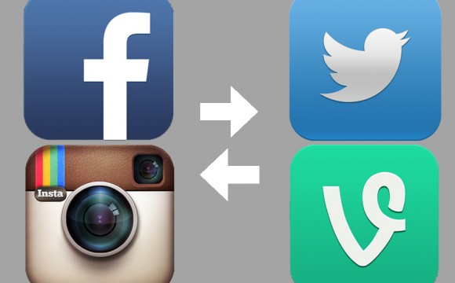

Mis redes sociales
an_ton_1997@hotmail.com
Toño HC
Sí, así es, uso Facebook, Twitter, Instagram como la mayoría de las personas con sus celulares, pero, no las uso por muchas horas, trato de controlar el tiempo en Internet xD ☝. Oh!, También tengo Vine
